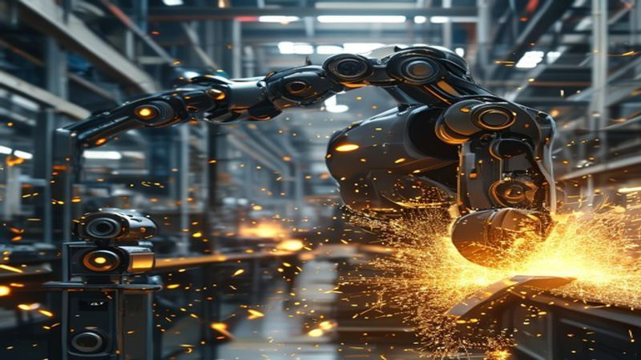

Huawei Ascend Breakthrough: New AI Chip Challenges Global Dominance

The global artificial intelligence landscape is witnessing a seismic shift with Huawei's latest announcement: a groundbreaking new AI chip in its Ascend series. This Huawei Ascend breakthrough represents not just a significant technological leap for the Chinese tech giant but a direct challenge to the established global dominance in high-performance AI processing. Developed amidst unprecedented geopolitical pressures, this new AI chip signals Huawei's formidable resilience and an ambitious push to redefine the future of AI infrastructure. Industry experts are already scrutinizing its potential to reshape markets, accelerate innovation, and perhaps even fragment the global semiconductor supply chain, marking a pivotal moment in the race for AI supremacy.
The Ascend Series: A Decade of Innovation and Ambition
Huawei's journey into the intricate world of AI semiconductors is not a recent endeavor but the culmination of over a decade of relentless research and strategic investment. The company first unveiled its Ascend series of AI processors in 2018, with the Ascend 910 and Ascend 310 chips quickly gaining traction for their robust performance in cloud AI and edge computing scenarios, respectively. These earlier iterations laid the foundational architecture and software ecosystem, notably the CANN (Compute Architecture for Neural Networks) framework, which has become central to Huawei's AI strategy. Despite facing severe restrictions on accessing advanced chip manufacturing technologies and crucial intellectual property since 2019, Huawei has defiantly pressed forward. This latest Huawei Ascend breakthrough is a testament to its deep engineering capabilities and a strategic pivot towards domestic self-sufficiency. It underscores China's broader national imperative to reduce reliance on foreign technology, particularly in critical areas like AI, which are deemed essential for national security and economic growth. The ambition behind the Ascend series isn't merely commercial; it's a statement of technological sovereignty, aimed at building a complete, vertically integrated AI ecosystem independent of external vulnerabilities. This long-term vision positions Huawei not just as a chip designer, but as a key architect of China's future digital backbone.
Technical Prowess: Unpacking the New AI Chip's Capabilities
The specifics surrounding Huawei's new AI chip, rumored to be an evolution of the Ascend 910 series, are nothing short of revolutionary, pushing the boundaries of what's currently achievable in AI acceleration. While precise benchmarks are still emerging from initial testing phases, early reports suggest a dramatic leap in computational density and energy efficiency. Sources close to the project indicate the chip boasts a peak performance exceeding 2 PetaFLOPS (FP16) or 4 PetaOPS (INT8), a significant improvement that places it firmly in contention with leading accelerators like Nvidia's H100 GPU. This immense processing power is reportedly achieved through a highly optimized neural network architecture, featuring thousands of dedicated AI cores and an innovative chiplet design that enhances data throughput and reduces latency. Furthermore, the new Ascend chip is engineered with advanced interconnect technologies, potentially allowing for seamless scaling in massive data centers and supercomputing clusters, crucial for training ever-larger language models and complex scientific simulations. Its power efficiency ratios are also touted as a key differentiator, offering a lower operational cost per inference or training cycle, which could be a game-changer for large-scale AI deployments. This technical prowess solidifies Huawei's claim to be a serious contender in the high-stakes AI chip market, offering a viable and powerful alternative for global enterprises and research institutions seeking diverse options for their AI infrastructure.

Geopolitical Implications and the Global AI Landscape
The arrival of Huawei's advanced Ascend AI chip injects a potent new dynamic into the already complex global AI chip market, with profound geopolitical ramifications. For years, the United States has imposed stringent sanctions designed to cripple Huawei's access to cutting-edge semiconductor manufacturing equipment and software, aiming to curtail China's technological advancement. The emergence of this chip demonstrates that these measures, while certainly impactful, have not halted China's indigenous innovation entirely. This breakthrough suggests a deepening self-sufficiency within China's semiconductor industry, likely leveraging domestic fabrication capabilities, potentially from partners like SMIC, even if at slightly older process nodes, combined with ingenious architectural optimizations. The implications are multi-faceted: it could accelerate the bifurcation of the global tech ecosystem, creating distinct, potentially incompatible, AI hardware and software stacks. Countries wary of geopolitical tensions or seeking alternatives to US-dominated supply chains might increasingly consider Huawei's offerings, particularly within the Belt and Road Initiative nations or BRICS+ bloc. This move also intensifies the race for global AI dominance, transforming it from a purely technological competition into a strategic geopolitical play where control over fundamental AI hardware becomes a critical lever of power. The ability to design and produce high-performance neural processing units autonomously gives China a significant strategic advantage, bolstering its long-term vision for technological leadership and digital sovereignty.
What This Means For You: Businesses, Developers, and the Future of AI
For businesses and developers worldwide, the Huawei Ascend breakthrough introduces both new opportunities and complexities. Companies heavily invested in AI might find an alternative to existing dominant providers, potentially fostering greater competition, driving down costs, and improving the accessibility of high-performance AI hardware. This diversified supply chain could be particularly appealing to organizations seeking to mitigate geopolitical risks associated with relying on a single source. Developers, on the other hand, will need to consider optimizing their AI models and applications for Huawei's Ascend architecture and its associated software stack, CANN. While this might involve an initial learning curve, it also presents a chance to tap into new markets and leverage potentially unique hardware advantages. For sectors like telecommunications, smart cities, and autonomous driving, where Huawei already has a significant presence, this new chip could dramatically accelerate AI integration and performance. Ultimately, this development signifies a robust push towards a more pluralistic AI infrastructure landscape. It empowers more nations and enterprises to engage in advanced AI development, potentially leading to a broader array of AI solutions and innovations globally. Users can expect faster, more efficient AI-powered services as this new wave of semiconductor innovation unfolds, shaping how we interact with technology daily.
Conclusion
The unveiling of Huawei's latest Ascend AI chip marks an undeniable turning point in the global technological race. This Huawei Ascend breakthrough not only showcases remarkable resilience and engineering ingenuity in the face of adversity but also fundamentally challenges the existing paradigms of global AI dominance. By delivering a new AI chip with formidable technical capabilities, Huawei has demonstrated its capacity to innovate independently and carve out a significant stake in the high-stakes AI chip market. The reverberations of this development will be felt across industries, influencing everything from data center design to the geopolitical balance of power. As the world navigates an increasingly complex and interconnected digital future, the emergence of powerful new players like Huawei ensures a dynamic, competitive, and rapidly evolving landscape for artificial intelligence. Stay informed with AI Profit Hub to understand how these pivotal advancements will shape your future investments and technological strategies.